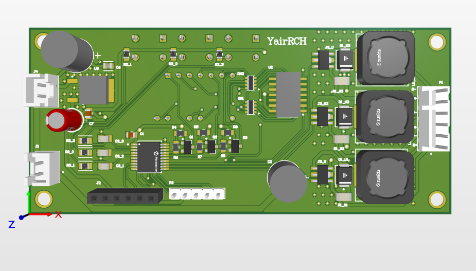
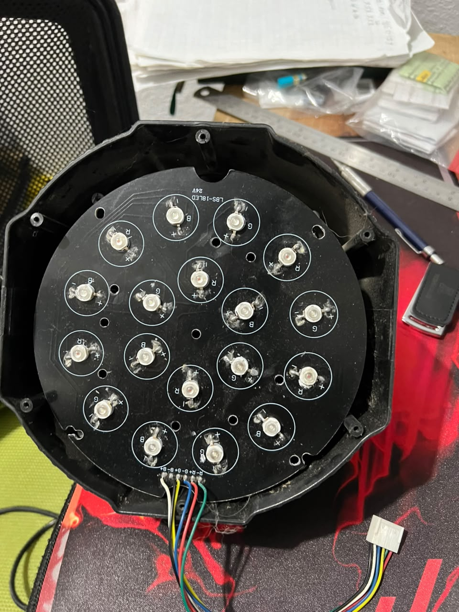
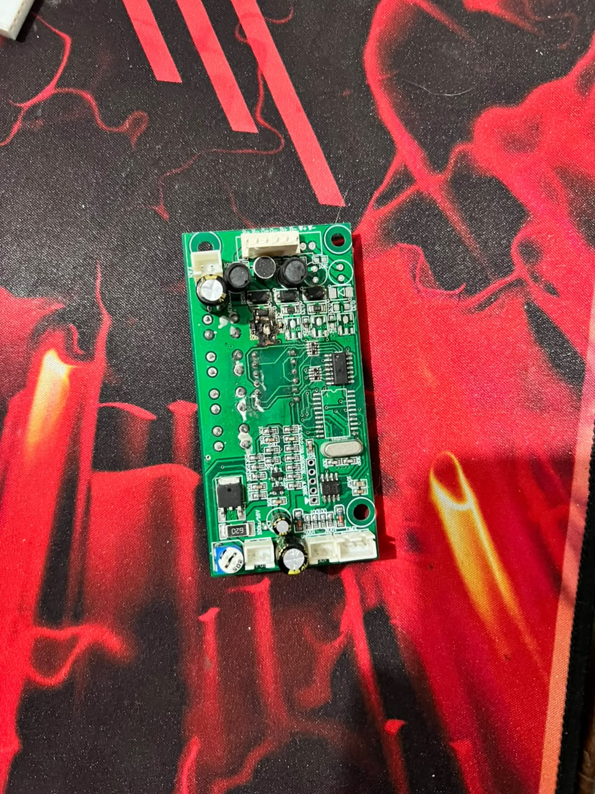
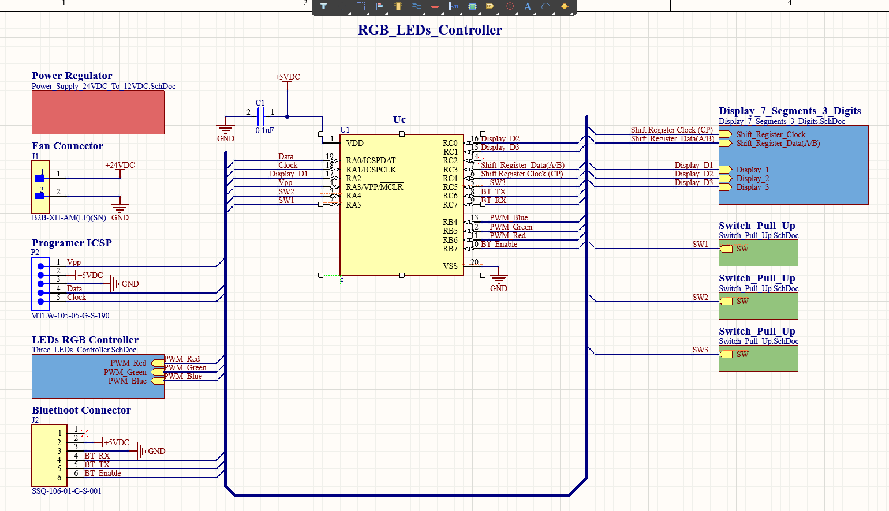
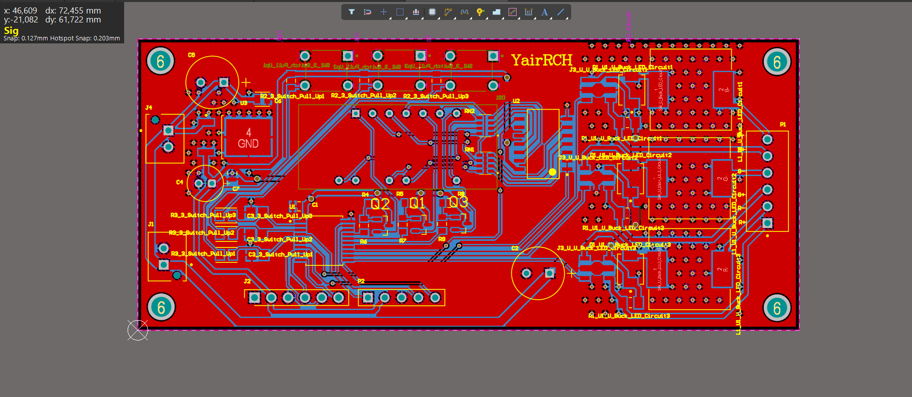
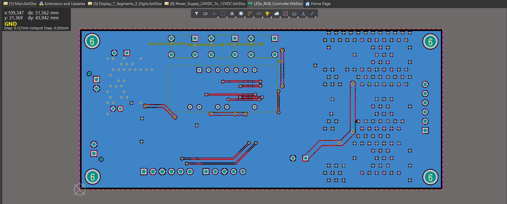
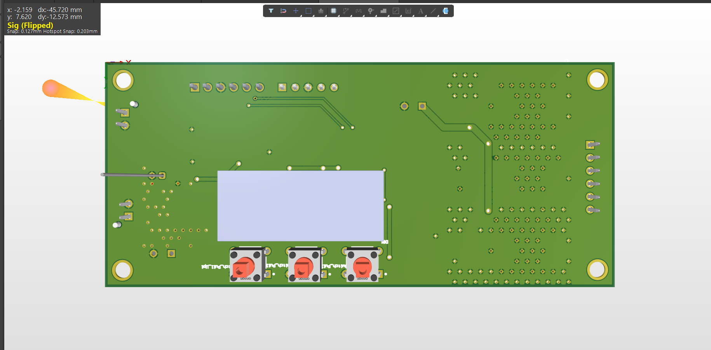
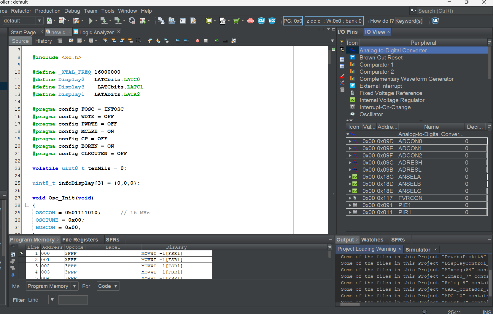
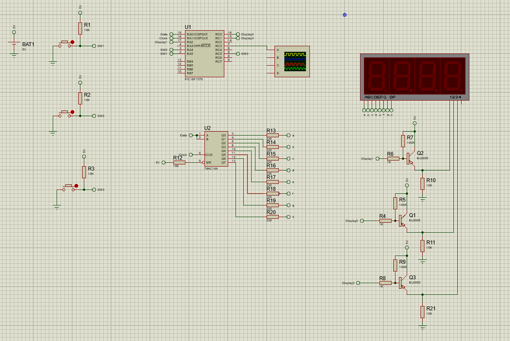

RGB LED Controller

Project Overview
This project focused on the reverse engineering and redesign of a commercial RGB LED controller used in stage and architectural lighting systems. The original objective was to analyze the existing hardware, understand its operation, and develop a new version that reduced manufacturing cost without sacrificing performance or functionality. In addition to replicating the original features, the redesign included provisions for future IoT integration by supporting an optional Bluetooth communication module, allowing the lighting system to be remotely configured and controlled.


Hardware Design
The controller independently drives three LED channels—Red, Green, and Blue—each consisting of six high-brightness 700 mA LEDs connected in series. Every channel is regulated by a PT4115 constant-current buck converter, providing efficient current regulation while enabling independent PWM brightness control for each color channel.
The digital electronics are powered from a 12 V supply through a 5 V linear voltage regulator, which provides sufficient current for the control circuitry while keeping the design simple and reliable.
The control system is built around a PIC16F15344 microcontroller. This device was selected due to its low cost, integrated high-speed oscillator, and Peripheral Pin Select (PPS) functionality, which allows most peripheral modules to be assigned to different I/O pins. This feature significantly simplified PCB routing and reduced design constraints without increasing the board size.
To minimize both hardware cost and microcontroller pin usage, the three-digit seven-segment display is driven using a 74HC164 serial-to-parallel shift register instead of dedicating multiple GPIO pins. Three push buttons provide a simple user interface for selecting lighting modes, configuring sequence timing, and adjusting Bluetooth settings when the communication module is installed.

PCB Design
The PCB was designed in Altium Designer as a compact two-layer board while following good electromagnetic compatibility (EMC) practices. Special attention was given to the layout of the switching regulators by minimizing high-current switching loops and providing continuous ground return paths.
Large ground planes were implemented on both PCB layers to reduce impedance and improve signal integrity. Additionally, via stitching was placed around the switching regulators and voltage regulator to improve thermal dissipation, strengthen the ground connection between layers, and reduce electromagnetic emissions. Although the switching frequency of the LED drivers is relatively low, the layout was designed following industry best practices to maximize reliability and electrical performance.



Firmware Development
The firmware was developed in C using MPLAB X IDE. It manages the user interface, controls the PWM outputs for independent RGB brightness adjustment, and executes the lighting sequences selected by the user.
One of the motivations for selecting the PIC platform was to expand my experience beyond AVR microcontrollers, while taking advantage of a programming model that is conceptually very similar. The firmware was also designed with portability in mind, allowing the hardware to be migrated to compatible microcontrollers such as the PIC16F15324, PIC16F1578, and PIC16F1579, requiring only minor modifications related to the PWM peripheral configuration.

Design Validation
Although the PCB has not yet been manufactured, the complete system was extensively validated through simulation before production. Hardware verification was carried out in Proteus, while firmware behavior was tested and debugged using the MPLAB X debugging tools.
Performing comprehensive simulations before fabrication allowed potential hardware and firmware issues to be identified early in the design process, reducing development risk and increasing confidence in the final implementation.

Conclusion
This project combines several areas of embedded systems and electronics engineering, including reverse engineering, embedded firmware development, PCB design, power electronics, and cost optimization. It also demonstrates experience in hardware validation through simulation, EMI-aware PCB layout techniques, and the integration of both hardware and software into a complete embedded system.
Year: 2026